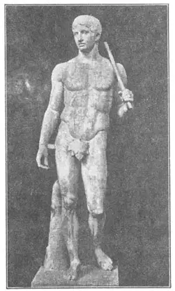
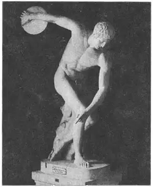

36
STANDING NATURALLY
自然的站姿

WHEN I used to recite poetry at school assemblies, I stood like an Egyptian statue of Rameses—hands straight down at my sides and feet close together, flat on the floor.“Stiff as a poker,” my teacher used to say. “Can’t you take a more natural, an easier position? Put one foot back of the other!”
So I stood like the wooden statue of the Schoolmaster of Boulac, but still with both feet flat on the floor. That was the best that I could do to be natural and that seemed the best that sculptors were able to do with their standing statues, until along came a Greek named Poly-clitus. Polyclitus made a statue of an athlete carrying a spear over his shoulder, and it was the first time a statue had been made in an easy, natural standing position, with the weight resting on one leg, one foot behind the other and not flat on the ground.
The Greeks called the Spear Bearer the perfectly proportioned man, the ideal figure, and other sculptors used this statue as a pattern and copied its proportions in the statues they made. Indeed, live athletes tried, with exercises, to make their own chests and legs and arms the same size as those of the Spear Bearer.
Polyclitus also made a statue of a woman athlete. It was called the Amazon. The Amazons were supposed to be a tribe of warlike women who had nothing to do with men—except to fight men in battle and even in duels!
Girls nowadays may not consider the figure of the Amazon beautiful. They may think it is too muscular for a woman. But fashions change. I remember when it was the style for women to have very small waists and they wore tight corsets, but the old Greek style came back and now most girls are too sensible to wear corsets at all.

No.36-1 THE SPEAR BEARER
（《持矛者》）
COPIED FROM POLYCLITUS
（波利格利托斯作品的摹制品）
Courtesy of The University Prints
Other sculptors admired these two statues and made copies of them in marble. It is fortunate for us they did so, for all we have now are the copies. The ones that Polyclitus himself made have disappeared and no trace of them is left. What became of them no one knows.
Polyclitus made his statues of a metal called bronze. The first metal ever discovered was not gold or silver or iron, but copper. Then tin was found; and tin and copper combined made bronze. So bronze is not a pure metal. It is a combination of copper and tin. Bronze lasts if kept dry, but when it is exposed to the weather or dampness, it is gradually eaten away. This metal could be worked so well that the Greeks loved to make statues and other things of it. It does not rust like iron, it is not expensive like gold or silver, and as it grows older it turns a rich brown or greenish color and in the course of time acquires a coating called a patina .
I have an ancient lamp made of bronze with a beautiful patina which it perhaps took two thousand years to get. Some people try to imitate the real patina by treating bronze with acid, but only nature and time can make the real patina.
Another Greek sculptor, a friend of Polyclitus, was named Myron. Myron went farther than Polyclitus in giving naturalness and action to his figures One of his statues was the Discus Thrower. The discus was a heavy disk and discus throwing was a sport in which the object was to see how far the discus could be hurled—underhanded as in bowling, not overhanded as in throwing a ball. It wasn’t rolled along the ground, but was hurled into the air.

No.36-2 THE DISCUS THROWER（《掷铁饼者》）
COPIED FROM MYRON（米隆作品的摹制品）
The Discus Thrower is shown just at the moment before the discus is to he hurled from his hand. Notice the toes of the front foot gripping the ground, those of the rear foot being drawn along the ground to balance the body. The discus weighed about two and a half pounds and the record throw was less than a hundred feet, which may not seem very far until you try it. Nowadays, the discus has been thrown a hundred and fifty-five feet, by a person swinging his body around in circles before letting the discus fly.
This statue was first made in bronze, but the bronze has disappeared and the picture shown here was made from a copy in marble. It is one of several copies in marble in European museums.
Myron also made a bronze cow which was so natural that it is said to have fooled everybody into thinking it a real cow. But this cow, too, has disappeared and there are not even copies left.
Bronze statues were entirely eaten away in the course of time Marble statues often were broken but otherwise they lasted.
【中文阅读】
我过去在学校大会上背诵诗歌时，总是像埃及的阿姆西斯雕像一样站着——双手垂放两边，双脚并拢平站在地板上。
“僵硬的像根拨火棒，”老师常对我说：“你就不能站得自然点，放松点吗？把一只脚放在另一只脚的后面！”
于是，我换了个姿势，像《布拉格校长》木雕那样站着，不过双脚还是平站在地板上。这是我所能做的最自然的姿势了。而且这似乎是当时雕刻家们所能雕出的最棒的站姿雕像。直到希腊雕刻家波利格利托斯出现后情况才有所改观。波利格利托斯刻了一个肩扛长矛的运动员雕像。这是有史以来第一座站姿自然且随意的雕像。这个运动员的重心落在一条腿上，一双脚不是平站在地上，而是一只脚放在另一只脚的后面。
希腊人认为这位持矛者的身材比例完美，体形理想。所以，其他雕塑刻家经常把这座雕像作为模板，在制作雕像时以此作比例参照。事实上，现实生活中的运动员也试着通过体育锻炼使自己的腹部、腿部和手臂能像持矛者一样有力。
波利格利托斯还雕刻了一位女运动员雕像，叫《亚马逊女战士》。据说，亚马逊族是好战妇女组成的部落，她们不与男人往来，除非是进行战争。她们甚至还决斗。
今天的女孩子可能不会认为亚马逊女人的体形有多美。她们可能会觉得作为女性，她们的肌肉太发达了。但是潮流总是不断变化的。我记得以前流行小腰时，女孩都穿紧身内衣，不过后来古希腊的风格又重新兴起，所以现在大多数女孩子都很明智 地不穿紧身内衣了。
雕刻家们都很欣赏这两座雕像，于是用大理石刻了许多摹制品。幸好他们那样做了，因为我们今天看到的都是摹制品。波利格利托斯自己刻的那两座雕像早已散失，甚至找不到任何痕迹。它们后来究竟怎么样了也没人知道。
波利格利托斯用一种叫青铜的金属来铸造雕像。其实人们最早发现的金属并不是金、银或铁，而是铜。后来又发现了锡。锡和铜结合产生了青铜。所以，青铜并非一种纯金属，而是铜和锡的结合体。在干燥的情况下，青铜能保存下来，但在经受风吹雨打或者在潮湿的环境下，它就会慢慢地腐蚀。青铜这种材质很好用，所以希腊人很喜欢用它来铸造雕像或其他东西。它不像铁那么容易生锈，也不像金银那样昂贵。而且随着时间的流逝，它会慢慢地变成深棕色或深绿色，而且长时间下来表面会形成一层保护膜，叫“铜绿”。
我有一盏青铜制的古灯，现在上面有一层很漂亮的铜绿，或许是经历了两千年才慢慢形成的。有些人试着把青铜和酸混合，从而产生铜绿，不过真正的铜绿是在自然和时间的催化下才形成的。
古希腊还有一位雕刻家，他是波利格利托斯的朋友，名叫米隆。在赋予雕像自然和动感方面，米隆做得比波利格利托斯还要好。他有一件作品叫《掷铁饼者》。铁饼是一种很重的圆盘，掷铁饼是一项体育运动，比赛看谁掷得远。它像打保龄球那样从底下往外抛，而不像投篮那样，举手投掷。铁饼不是从地上滚出，而是向空中扔出。
《掷铁饼者》正好向我们展示了铁饼即将被掷出的瞬间情景。注意看他的前脚趾抠地，而后脚却在顺地拖，以保持身子平衡。铁饼约重2.5磅，当时掷铁饼的记录不到100英尺。如果你试一下，就知道这个距离不算太远。现代人掷铁饼，要是先转身旋几圈，可将铁饼掷到155英尺那么远。
这座雕像开始是用青铜雕铸的，后来青铜慢慢腐蚀了。现在我们从图片中看到的雕像是用大理石仿制的。这座雕像是欧洲博物馆里为数不多的大理石雕像的摹制品之一。
米隆还雕铸了一头青铜牛。据说，这座青铜牛雕像铸得太逼真，人人都被愚弄以为是真牛。后来这座雕像也消失不见了，却没有留下摹制品。
青铜雕像在时间的长河里完全被“吞噬”了。而大理石雕像除非被打碎，否则都能保存下来。